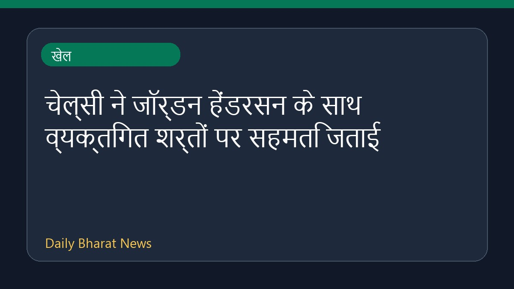

चेल्सी ने जॉर्डन हेंडरसन के साथ व्यक्तिगत शर्तों पर सहमति जताई

रिपोर्टों के अनुसार, चेल्सी ने जॉर्डन हेंडरसन के साथ व्यक्तिगत शर्तों पर सहमति बना ली है। जॉर्डन हेंडरसन के ब्रेंटफोर्ड छोड़ने के बाद क्लब इस फ्री एजेंट को साइन करने के लिए तैयार है। इसके अलावा, चेल्सी से जुड़े ट्रांसफर समाचारों में ब्राइटन के स्ट्राइकर डैनी वेल्बेक के भी मेडिकल के लिए तैयार होने की चर्चा है, हालांकि पॉल मर्सन को वेल्बेक के संभावित ट्रांसफर को लेकर कुछ चिंताएं हैं। इस संबंध में उपलब्ध विवरण अभी सीमित हैं।
मूल स्रोत: Sports News Sources
Chelsea agree personal terms with Jordan Henderson — report - We Ain't Got No History ↗
Chelsea agree personal terms with Jordan Henderson — report - We Ain't Got No History ↗